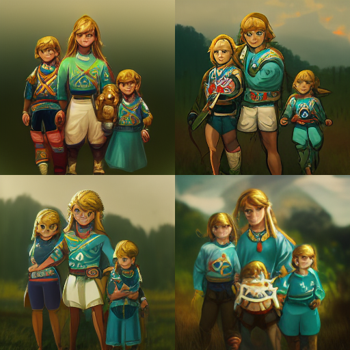

Much like a lot of the internet over the past couple months, I’ve been tinkering with some AI art generators, mainly Midjourney (if only because I’m waitlisted on DALL-E 2).
It’s been surprisingly fun, if challenging. This isn’t really my area of research, but I understand the basic underpinnings:
These models are trained using vast swaths of image-and-text pairings, so the model can develop an association between features in images and the corresponding text that describes them. Obviously this process is very complicated, and also requires not only a great deal of data but also a considerable amount of computing power, so it’s still a very active area of research and is largely out of reach of your every day researcher or individual training their own model. But once the model is trained, users can provide snippets of text, which the model then translates into an image.
Therein lies the magic. There’s a lot of randomness involved in the image generation process, since even a text input as simple as “cat” could mean a LOT of different things, image-wise. That’s partly a feature: two people who give the exact same text input will likely get slight variations of the same concept, and possibly get wildly divergent results.
But it also makes for a challenging user experience: there’s a sort of “lingo” that you have to wrap your head around, a “way of talking to the model” that goes beyond simple word-concept mappings, that only comes with extended use of the models. It gets harder the more specific of an idea you have: your conceptual understanding of the idea may not bear any resemblance to the concept the model learned!
(man this is getting philosophical! let’s see if I can make this a bit more concrete with some examples)
empty beach, dark storm in distance, one flower blooms from the sand to the side, high detail, atmosphere, Arnold render, ultra-realistic, dramatic lighting, glow, cinematic lighting, epic, 8kThis was actually an image that I generated based off an image someone else had already generated (yeah, we can take public images and run them back through the model with new or additional text).
From here, I ran a couple more of my own modifications:
I really liked the second one, though with the third I love the ambiguity in the landscape: is it water, or is it snow? Hard to say in that lighting.
From here, I started focusing a bit more on landscapes under a starlit sky (like the cover photo). I eventually settled on this one, which I really kinda love (so I made the highest-res version of it that I could):
wooded mountainous winter landscape under cosmic night sky with distant glowing small town in a valley, nebulae, crescent moon, planetary rings, cinematic, atmospheric, 8k, dramatic lighting, ultra realisticI will say, it definitely takes some doing to get a feel for how it works–what I had in mind was nowhere near what the model spat out, even though I love what it created. Still, there weren’t really any planetary rings (I was thinking of Gaal’s homeworld in the AppleTV+ Foundation series), and the “glowing small town in a valley” seems to have been diffusely spread over the entire valley, almost like fireflies, rather than distinct. Beautiful, no question, but not exactly what I’d had in mind.
One final bit I tried before my trial ran out was a completely different direction:
raspberry pi computer made out of raspberries, modern, futuristicI see a lot of super awesome art being generated from very terse prompts, so I was trying to capture that a little bit here (as opposed to the downright locquacious landscape prompts above).
Some of the earlier images I created had more to do with my family. This first one was created shortly after my wife left her previous job to pursue her longtime dream of being a full-time fiction writer (it was seriously one of the first things I ever learned about her all those years ago): I was inspired to see if the model could capture something about what that looked like, in my head at least.
a writer working at her computer surrounded by a world of her own creationAnd I really love this next one, as it evokes less of the specific act of writing and more of how it’s about creating.
writer standing on the boundary between worlds, the world she lives in and the world she createsWe’ve also been huge fans of Zelda for quite awhile (which longtime readers already know), and not too long ago I commissioned a fan account to remake a family photo as if it were in the Zelda universe.
So I played with that idea a bit, and while the results weren’t great–I get the feeling the generator has a harder time dealing with very specific real-world concepts, as opposed to more general categories of things–I did get this pretty cute rendering of what is most definitely a Hyrulean family.

zelda champions from breath of the wild, family, 1985, highresIt’s fun to tinker with. In all honesty I’ll probably keep playing with it here and there as the mood strikes; if you want to follow along, there’s a public feed of all the pictures I generate here (note: it’s “public” in that you have to create a free account to see it), since there’s no way I’m going to shell out the $ required to make my images private.
Legal Disclaimer
At least, I’ll keep tinkering until copyright catches up… which, on that note, I should mention: I agree with everything in this twitter thread on the topic. I want to end on this note, because I think this is very important to keep in mind.
Keep in mind, I am not a lawyer, but based on my read there are two legal interpretations of these models: as an author that learns and creates novel work, or a product that synthesizes derivative works. In the case of the former, any kind of substantive duplication of existing work created by someone else is copyright infringement; and in the case of the latter, it’s using novel, unlicensed work in a paid product, which is also copyright infringement.
As someone whose background is in exactly this kind of generative “AI” work, I would generally fall under the latter interpretation of these models as a product (what they “learn” is dubious at best; I would never call their reproductions “novel”). As such, I also agree with the tweet’s author that the moment these companies begin monetizing these models is when, at the very least, they’ve committed a moral rights violation. It’s the same exact reason I’m very uncomfortable with the GitHub CoPilot product: it’s been trained using billions of lines of code that was written, tested, debugged, scrutinized, and labored over by humans who did not consent to nor were reimbursed for having their code used in a paid product.
That last tweet in the thread is particularly poignant for me, and distills much of the reason for my disillusionment with the tech sector in general. I’m sorry to end on such a sour note, but while I do love the amazing things machine learning is doing, we have to keep at the forefront of our minds that machine learning is, ultimately, a human endeavor, and if it won’t work without humans, we should make sure those humans are taken care of: recognition, compensation, empathy, and so on.
steps off soap box…for now
Citation
@online{quinn2022,
author = {Quinn, Shannon},
title = {Fiddling with Generative Art Models},
date = {2022-08-03},
url = {https://magsol.github.io/2022-08-03-fiddling-with-generative-art},
langid = {en}
}